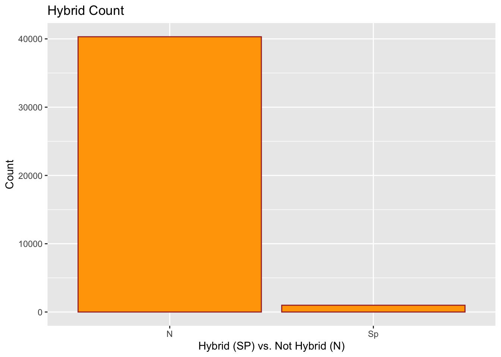

This data comes from the Duke Lemur Center. The Duke Lemur Center houses over 200 lemurs across 14 species. Lemurs are the most threatened group of mammals and are at risk of extinction. Lemurs are native to Madagascar which is located in the southwestern Indian Ocean. This data set contains taxonomic code, specimen ID, hybrid status, sex, name, DOB, birth month, birth type, birth institution, litter size, and many more interesting variables about lemurs. This is a very large data set containing
Interesting Questions to Ask
This is a very large data set so the purpose of asking these questions is to find interesting hypotheses to ask. Exploring the data will make it easier to create hypotheses
How many Lemurs are there? By sex?
What is the average weight of a Lemur? What about for each taxon?
What is the average birth type for a Lemur? By sex? By Taxon?
Does average litter size change by birth type?
Hypotheses
If hybrid Lemurs are born then they are more likely to be captive-born rather than wild-born.
If Lemurs are mating it will more likely be in April and then the infants will be born around August and September.
Answering Our Questions
Here we will look at the number of Lemurs in the data set and separate them by sex. We will also see the Lemurs grouped by their name. It is evident that there are 41,305 Lemurs within this data set. Out of these, 20,179 are female, 21,117 are male, and 8 are not determined. In is evident that in the table and the graph, MMUR has the biggest species count, with a count of 6,127.
exploratory_data %>%count(sex)
# A tibble: 3 × 2
sex n
<chr> <int>
1 F 20280
2 M 21015
3 ND 9
# A tibble: 1,996 × 2
name n
<chr> <int>
1 AARON 2
2 ABAS 5
3 ABDUL 1
4 ABEDNIGO 12
5 ABEL 2
6 ABENA 54
7 ABIGAIL 1
8 ABNER 1
9 ABSINTHE 2
10 Abu 134
# … with 1,986 more rows
exploratory_data %>%group_by(name) %>%count(sex)
# A tibble: 1,998 × 3
# Groups: name [1,996]
name sex n
<chr> <chr> <int>
1 AARON M 2
2 ABAS M 5
3 ABDUL M 1
4 ABEDNIGO M 12
5 ABEL M 2
6 ABENA F 54
7 ABIGAIL F 1
8 ABNER M 1
9 ABSINTHE M 2
10 Abu F 134
# … with 1,988 more rows
exploratory_data %>%ggplot() +geom_bar(mapping =aes(x = taxon), color ="purple", fill ="pink") +labs(title ="Count of Lemurs Species", x ="Species", y ="Count") +coord_flip()
Here we will see the average weight of a Lemur. To narrow this even more, we will look at the average weight of a Lemur per taxon. After running this, it is evident that the average weight of a Lemur is 1,484.9 grams. This is about 3.3 pounds which is very light. The taxon MMUR (Gray Mouse Lemur) has the lightest weight of 74 grams or 0.16 pounds. The taxon EFUL (Common Brown Lemur) has the heaviest weight of 2,372 grams or about 5 pounds.
Using the exploratory data it is evident that a larger majority are captive born. 37,489 are captive born while 3,724 are wild born. This may be because Lemurs are becoming extinct so it is harder for them to be born in the wild with larger numbers. When looking at birth type through taxon, it is evident that there are very few taxon that are wild born. When looking at sex, there is not a large gap between the different birth types when looking at sex. These variables are split pretty evenly. The graph shows the amount of birth types and it is very evident that the bar for captive born surpasses the bar for wild born by a large gap.
exploratory_data %>%count(birth_type)
# A tibble: 3 × 2
birth_type n
<chr> <int>
1 CB 37544
2 Unk 81
3 WB 3679
# A tibble: 7 × 3
# Groups: sex [3]
sex birth_type n
<chr> <chr> <int>
1 F CB 18283
2 F Unk 51
3 F WB 1946
4 M CB 19252
5 M Unk 30
6 M WB 1733
7 ND CB 9
exploratory_data %>%ggplot() +geom_bar(mapping =aes(x = birth_type), color ="hotpink", fill ="forestgreen") +labs(title ="Birth Types", x ="Birth Type", y ="Count")
It is evident that the average litter size is 1 with a count of 17,296. As the litter size goes up to 2, 3, and 4 it becomes more unlikely. A litter size of 4 has a count of 925. This could be another reason why Lemurs are becoming extinct. Since the litter size is lower, there is a lower number of species being born which correlates with the reduced population as a whole. Looking at the data regarding litter size and birth type it is evident that there is no data regarding the litter size of wild born Lemurs. This makes sense because it would be harder and maybe even impossible to track the litter size of wild born Lemurs.
exploratory_data %>%count(litter_size)
# A tibble: 5 × 2
litter_size n
<dbl> <int>
1 1 17369
2 2 9688
3 3 4282
4 4 906
5 NA 9059
exploratory_data %>%ggplot() +geom_bar(mapping =aes(x = litter_size), color ="purple", fill ="white") +labs(title ="Litter Size", x ="Litter Size", y ="Count")
# A tibble: 7 × 3
# Groups: birth_type [3]
birth_type litter_size n
<chr> <dbl> <int>
1 CB 1 17369
2 CB 2 9688
3 CB 3 4282
4 CB 4 906
5 CB NA 5299
6 Unk NA 81
7 WB NA 3679
Answering Our Hypothesis
If hybrid Lemurs are born then they are more likely to be captive-born rather than wild-born.
Here, we will look at the number of hybrids per taxon and per sex. In total there are 992 hybrids which is a small amount compared to the 40,312 that are not a hybrid. The ggplot is used to really accentuate the difference bewteen these two variables. The taxon EUL has the most hybrids which should be true as this is known as the hybrid species. There are 624 male hybrids and 368 female hybrids. My hypothesis was accepted, If hybrid Lemurs are born then they are more likely to be captive-born.
exploratory_data %>%count(hybrid)
# A tibble: 2 × 2
hybrid n
<chr> <int>
1 N 40315
2 Sp 989
# A tibble: 28 × 3
# Groups: taxon [27]
taxon hybrid n
<chr> <chr> <int>
1 CMED N 4039
2 DMAD N 2521
3 EALB N 159
4 ECOL N 1240
5 ECOR N 1055
6 EFLA N 1600
7 EFUL N 177
8 EMAC N 868
9 EMON N 1773
10 ERUB N 666
# … with 18 more rows
# A tibble: 6 × 3
# Groups: sex [3]
sex hybrid n
<chr> <chr> <int>
1 F N 19923
2 F Sp 357
3 M N 20384
4 M Sp 631
5 ND N 8
6 ND Sp 1
exploratory_data %>%ggplot() +geom_bar(mapping =aes(x = hybrid), color ="black", fill ="lightblue") +labs(title ="Hybrid Count", x ="Hybrid (SP) vs. Not Hybrid (N)", y ="Count")
If Lemurs are mating it will more likely be in April and then the infants will be born around August and September.
According to this data, the conception month tends to be more around April, May, and June. Compared to the hypothesis of April, this wasn’t too off. The data also revealed that the infants are born in March, April, and May. The hypothesis predicted, August and September and this was way off. To find reasoning for this, I found the average expected gestation which was about 119 days. This tells us the period of developing inside the womb between conception and birth. 119 days is about 4 months so if conception occurred in April then the baby would be born around August which supports my hypothesis but does not hold true for the data.
# A tibble: 1 × 1
avg_expected_gestation
<dbl>
1 119.
Inference
Here I’ll be using the “new” data which was unseen during the exploratory analysis seen earlier.
here are the hypotheses, I till be testing with this new data.
If hybrid Lemurs are born then they are more likely to be captive-born rather than wild-born.
If Lemurs are mating it will more likely be in April and then the infants will be born around August and September.
Using the new data, we will look at the number of hybrids per taxon and per sex. In total there are 1,034 hybrids which is a small amount compared to the 40,270 that are not a hybrid. The taxon EUL has the most hybrids which should be true as this is known as the hybrid species. There are 657 male hybrids and 377 female hybrids. My hypothesis was accepted, If hybrid Lemurs are born then they are more likely to be captive-born. Comparing this results to the exploratory data it is evident that the results have similar findings. These findings allow us to understand the data very well.
test_data %>%count(hybrid)
# A tibble: 2 × 2
hybrid n
<chr> <int>
1 N 40290
2 Sp 1015
test_data %>%group_by(taxon) %>%count(hybrid)
# A tibble: 29 × 3
# Groups: taxon [27]
taxon hybrid n
<chr> <chr> <int>
1 CMED N 4031
2 DMAD N 2556
3 EALB N 168
4 ECOL N 1227
5 ECOR N 1039
6 EFLA N 1617
7 EFUL N 151
8 EMAC N 866
9 EMON N 1872
10 ERUB N 690
# … with 19 more rows
test_data %>%group_by(sex) %>%count(hybrid)
# A tibble: 5 × 3
# Groups: sex [3]
sex hybrid n
<chr> <chr> <int>
1 F N 19915
2 F Sp 362
3 M N 20369
4 M Sp 653
5 ND N 6
test_data %>%ggplot() +geom_bar(mapping =aes(x = hybrid), color ="brown", fill ="orange") +labs(title ="Hybrid Count", x ="Hybrid (SP) vs. Not Hybrid (N)", y ="Count")

According to this new data, the conception month still tends to be more around April, May, and June. Compared to the hypothesis of April, this wasn’t too off. This new data also revealed that the infants are born in March, April, and May. The hypothesis predicted, August and September and this was way off. For this new data, the average expected gestation was also about 119 days. 119 days is about 4 months so if conception occurred in April then the baby would be born around August which supports my hypothesis but does not hold true for the data. These findings were exactly the same as the exploratory data findings. These findings allow us to understand the data very well.